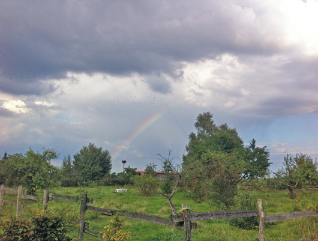
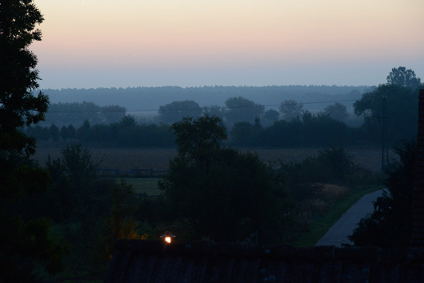
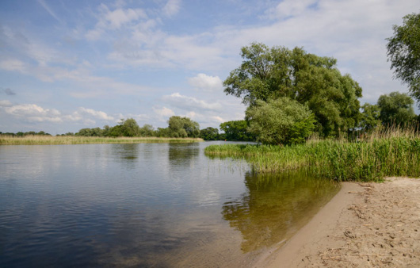
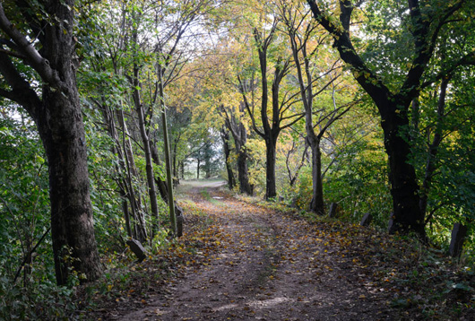
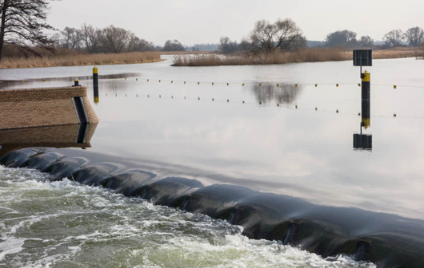

Banthyz, wie das Dorf in der ersten urkundlichen Erwähnung des Jahres 1225 genannt wurde, bedeutet übersetzt soviel wie “Havelbogen”. Dieser Name beschreibt die Lage des malerischen Dorfes, eingebettet in eine wunderschöne Landschaft aus Wasser, Wald, Wiesen und Feldern. Das kleine ruhige Dorf mit ca. 170 Einwohnern gehört zum Havelland im Bundesland Brandenburg.
An heißen Sommertagen verbringt man seine Zeit am Besten im Schatten der Bäume an der Badestelle, die vom Fuchsbau in 5 Minuten zu erreichen ist. Über den kleinen Sandstrand gelangt man ins erfrischende Wasser der Havel.
Es lohnt sich die Natur der näheren Umgebung zu Fuß zu erkunden. Ob Sie die ersten Knospen an den Bäumen entdecken oder Tiere wie Rehe, Füchse, Störche, Fledermäuse oder Vögel in ihrem natürlichen Lebensraum beobachten, es gibt immer etwas zu erleben. Im Frühjahr und Herbst beobachtet man die Vogelschwärme von Gänsen, Schwänen, Kranichen, Enten und Schnepfenvögeln, die in der Region Rast machen. Im April bekommt das Dorf regelmäßig Besuch von einem Storchenpaar...
Wenn dann, an den kühleren Herbsttagen die Landschaft im Nebel und im Winter dann im Schnee verschwindet, macht sich eine ganz eigene Stimmung breit, die zu erleben, eine eigene Poesie inne hat.


Bahnitzér Badestelle mit Sandstarnd

Spaziergang zur Bahnitzer Schleuse

Bahnitzér Wehr
|